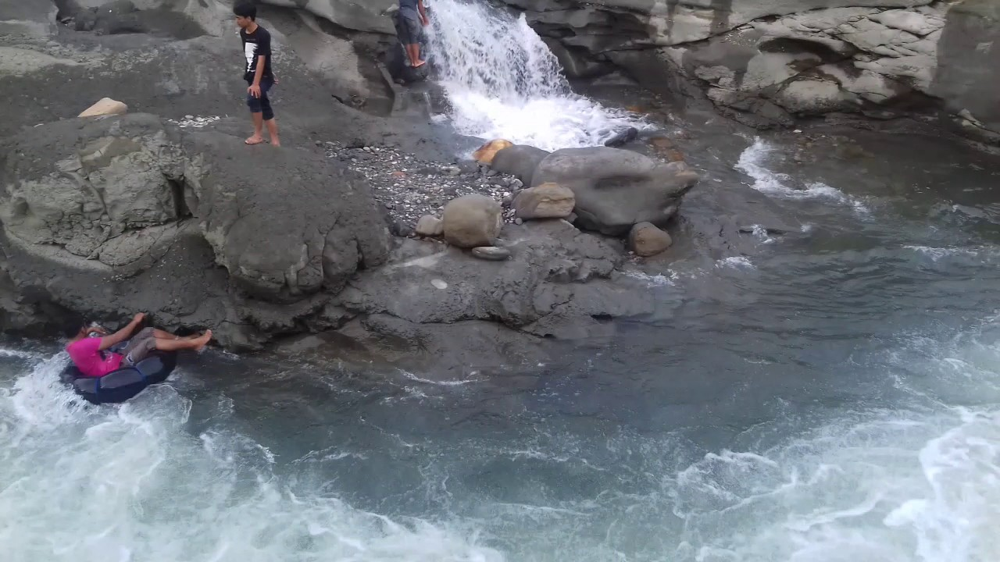

|
|
Bagi Anda yang punya rencana berakhir pekan, sebelum masuk Ramadan 1439 H/2018 M, Destinasi Wisata Permandian Alam Batupapan, Kecamatan Wara Bara, Kota Palopo, bisa menjadi pilihan alternatif. Wisata alam ini menawarkan panorama alam yang indah, angin yang sejuk, dan air yang jernih. Apalagi, kalau agendanya ingin bakar-bakar ikan, sekaligus mandi di sungai, wisata yang telah dibenahi Pemkot Palopo ini sangat cocok. Sebab di sepanjang pinggir sungai, terpampang luas lokasi yang bisa ditempati bakar ikan. Bagi yang ingin menyewa gazebo, ada dua pilihan, gazebo milik masyarakat atau gazebo yang telah dibangun Pemkot Palopo. Terdapat juga jembatan gantung, yang bisa dijadikan spot berfoto atau berselfie ria. Anda juga bisa menyewa ban bekas untuk dipakai berseluncur di sungai yang arus airnya cukup deras.  Untuk sampai ke Objek wisata ini, kita harus menempuh jarak sekitar 16 km dari pusat kota Palopo. Kondisi jalan sudah beraspal mulus. Kendaraan roda dua ataupun bus, cukup leluasa melewati jalan menuju lokasi itu. Jika dari arah Kota Palopo, di Jalan Trans Sulawesi, Kecamatan Telluwanua, bisa lewat jalan sebelah kiri dari SPBU Padang Alipan. Ada sekitar 4 km sudah sampai ke objek wisata. Sementara kalau dari arah utara, Anda bisa lewat Karetang, Walmas. |